先让最小实验成立
走廊使用 meters、Z-up，Visual 与 Collision 分层。测试 Cube 添加 Rigid Body 和 Convex Hull Collider，启用重力、关闭 Kinematic；地板使用静态 Triangle Mesh Collider。
DEVLOG · 2026.09.23 · REALITY CAPTURE
同一个空间，用照片、Scaniverse LiDAR 与重建模型三种方式观察。目标不是做一张漂亮图片，而是测试 AI Agent 能否把现实采集整理成下一步可用于机器人仿真的环境资产。
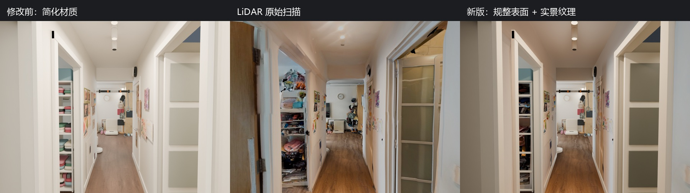
左：规整几何 + 简化材质，结构清楚但失去真实细节。中：原始 LiDAR 扫描，外观最接近现场，但几何噪声、破洞和不可见区域明显。右：规整表面 + 捕获纹理，尝试在可编辑几何与真实外观之间取得平衡。
01 / THE QUESTION
Scaniverse 给出了尺度、空间关系与 8192×8192 原始纹理，却也带来三角网格噪声、断裂边界、遮挡缺失和被拍摄光照烘进纹理的问题。照片提供了家具、装饰与材质线索，却没有可靠深度。今天的实验就是把两类证据组合起来，而不是让任何一种输入独自承担全部重建。
02 / WORKFLOW
整理 15 张 HEIC 照片，生成 JPG 与预览副本；识别走廊、门洞、家具、灯具、画框和照片不可见区域。照片用于视觉判断，不假装提供精确尺度。
导入原始 GLB，保留扫描坐标和米制比例；采样三角面法线、中心与面积，拟合主要墙面、地面和天花板。走廊在 Y=0 的净宽约 1.089 m，规整净高约 2.60 m。
原始扫描放入隐藏 Reference Collection。用几何、拓扑与 UV 哈希验证前后未变；建筑、照片版和 capture 版也分别保存，避免一次实验覆盖另一条方法。
新建墙体、门洞、地面、天花板、门框和踢脚线。建筑初版包含 22 个新网格组件、368 vertices、324 quad faces；推断墙体单独放置并标记不确定性。
从照片做透视校正裁切，从扫描纹理提取木地板与墙面外观，再补回筒灯、通风口、装饰和家具。当前 capture 方法是相机射线捕获的间接漫反射外观，并非完全可重新打光的 PBR 材质。
从相同走廊视角渲染简化材质、原始扫描和纹理捕获版本；检查非有限坐标、图像打包、天花板可见性与源扫描哈希。最终判断不只问“像不像”，还问“能不能编辑、复现和继续导出”。
03 / EVIDENCE
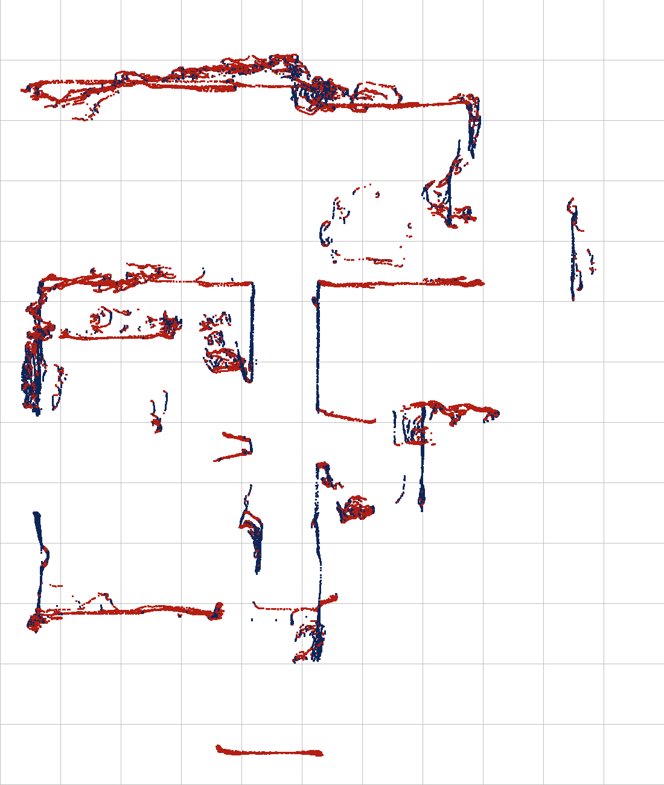
用扫描平面拟合和水平切片确定主要墙面与开口。
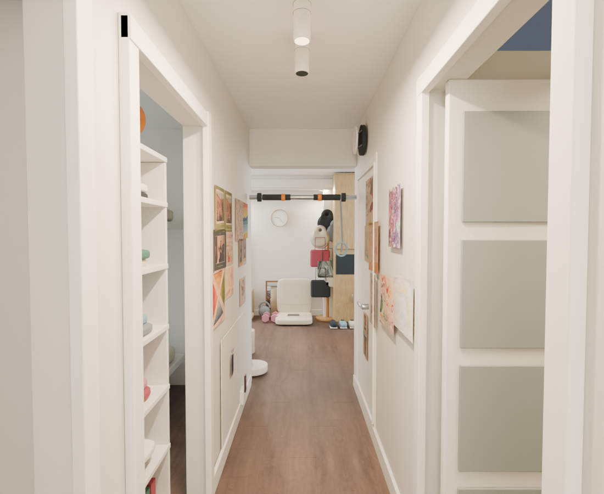
照片补回家具、装饰、材质与未被扫描完整记录的视觉信息。
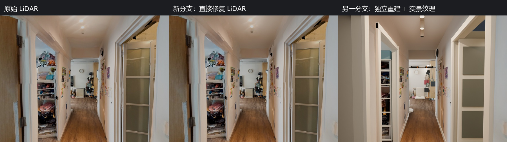
局部修复降低破洞与表面噪声，但大范围未扫描区域仍不能被算法当作已知事实。
04 / GAUSSIAN SPLATTING TEST
这次另外测试了 Scaniverse 的 Gaussian Splatting 工具，并把 525,679 个 splats 完整导入 Blender。结果保留了原始环境的颜色与整体气氛，但窄走廊、大片白墙、遮挡和曝光变化让缺点非常明显。
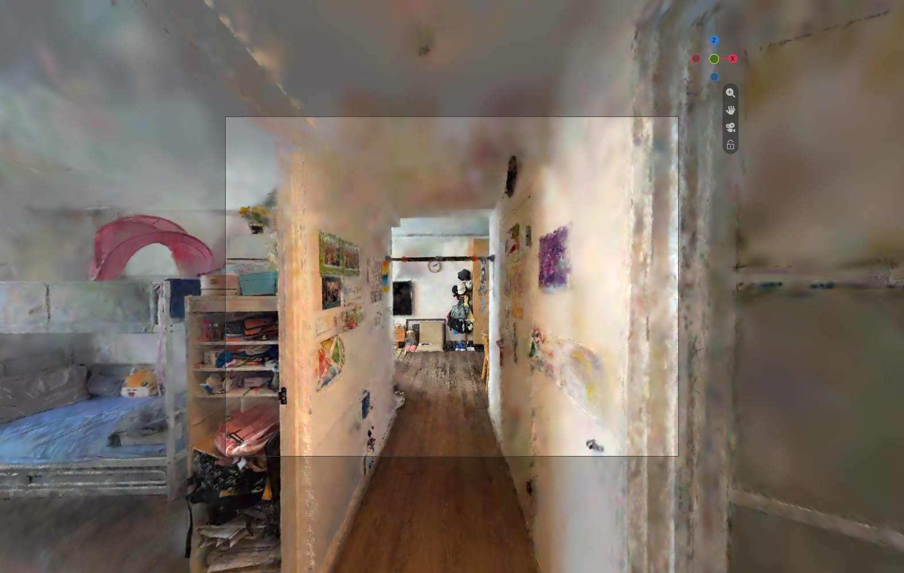
整体空间可辨认，但门框、墙角、天花板和画框边缘出现涂抹、膨胀与 floaters。
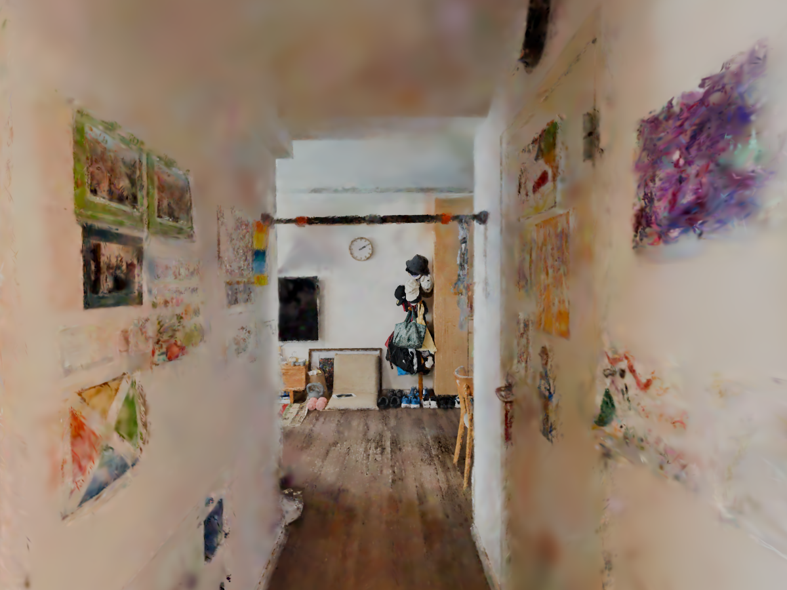
正对采集路径的视角相对可读；白墙细节依然软化，薄物体和遮挡边缘不稳定。
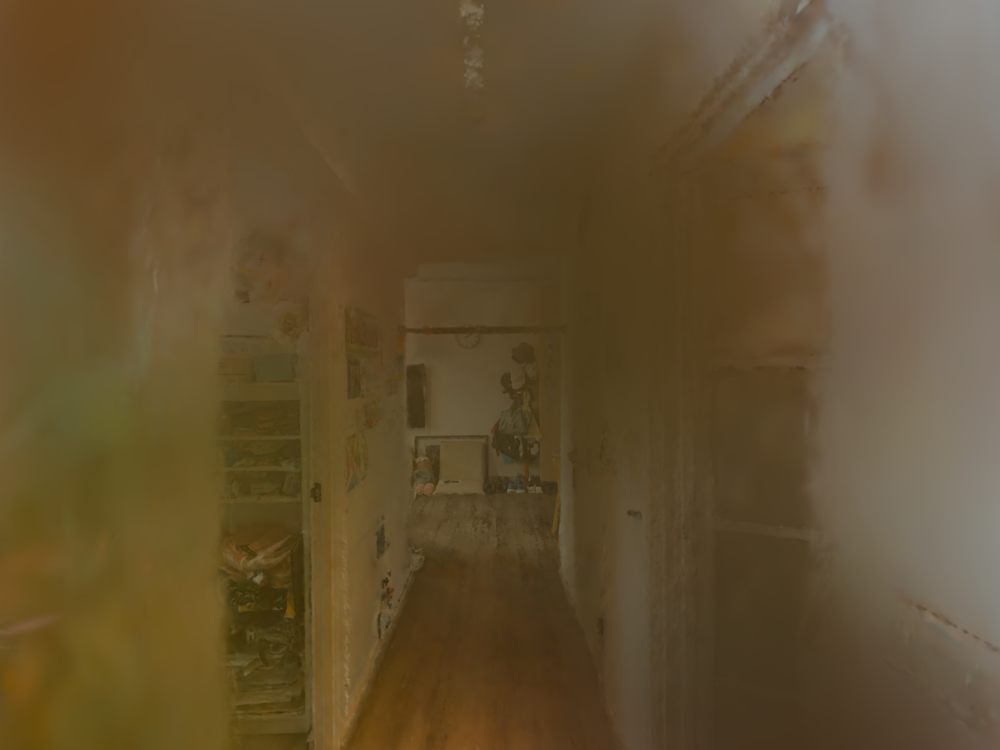
偏离优势视角后出现明显雾化、曝光污染和外观崩坏，说明视角泛化不足。
保留现场光照与色彩氛围，但不是明确的墙、门、地面和家具组件；难以直接赋予碰撞、语义、物理材质或独立随机化属性。
提供米制尺度、主要平面与粗略几何证据，但包含扫描噪声、破洞、遮挡和复杂三角拓扑。
使用 LiDAR 约束尺度与空间关系，再重建低噪声、独立组件化的 Blender scene；同时借助照片和扫描纹理接近真实材质与环境光照。
05 / FINAL CONCLUSION
墙、门、地面、天花板和家具彼此独立，便于编辑、替换、标注与 domain randomization。
规整平面与清晰拓扑比扫描噪声或 splat 外观更适合碰撞体、导航和物理验证。
LiDAR 保留尺度和空间关系；照片与捕获纹理帮助接近现场材质、颜色与环境光照。
模块化资产更容易继续添加碰撞代理、语义、材质参数，并导出 OpenUSD、Isaac Sim 或其他机器人平台。
重建阶段边界（9 月 23 日）：这还不是 calibrated building survey，也不是已经通过物理、碰撞、语义和 USD 验证的 Sim-ready 最终资产。部分墙厚、房间深度、家具款式与不可见区域仍是合理补全。但相比 Gaussian Splatting 或直接使用原始扫描，它已经为机器人仿真的下一步准备了更清楚、更可控的结构。
06 / SIM-READY HANDOFF
当目标明确为 Isaac Sim 中的机器人导航与避障后，Agent 开始把视觉模型和碰撞模型拆开，并询问 Isaac Sim 的安装位置。由于 9 月 23 日的机器尚未安装 Isaac Sim，这一轮选择先生成可移植 USD 资产包、验证脚本、依赖清单与导入说明，而不是假装已经完成运行验证。
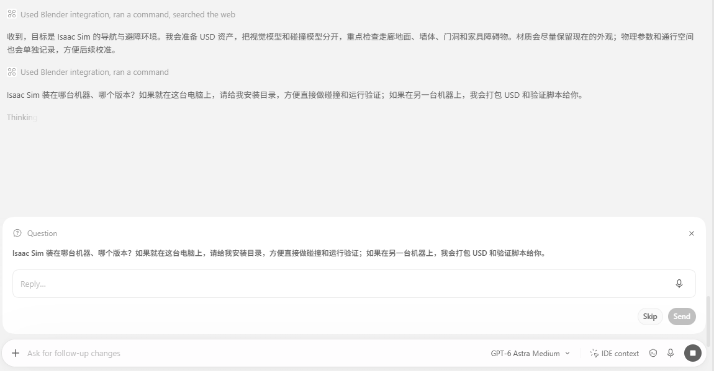
导航与避障决定了资产重点：尺度、地面、墙体、门洞、家具碰撞与通行空间优先于渲染技巧。
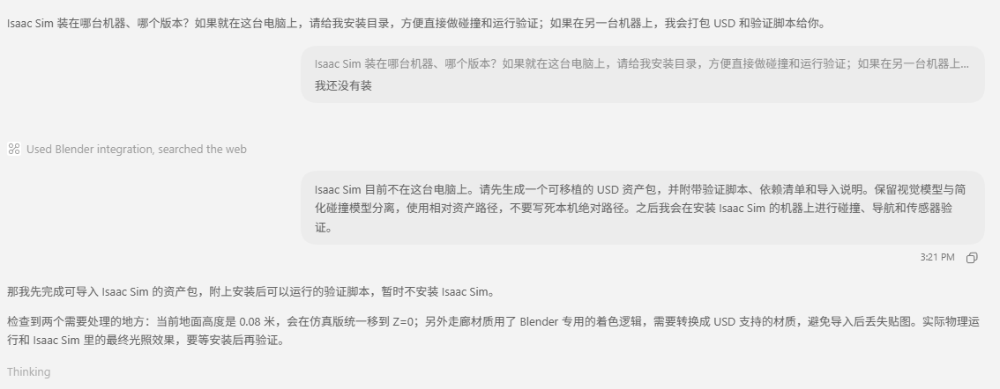
当时只完成可导入准备；碰撞、导航、传感器与最终材质效果必须在安装 Isaac Sim 后再验收。
保留照片重建与 Blender 视觉版，单独创建 Isaac Sim 导出版本。
统一移动整个 Sim-ready 场景层级或根节点，不只移动地面，避免家具悬空和碰撞错位。
视觉网格保留外观；墙、地面、门洞与家具使用简化、稳定的碰撞代理。
复杂着色逻辑烘焙为 Base Color、Roughness、Metallic、Normal 等可移植贴图。
纹理、USD 层和依赖随包交付，不写死当前电脑的绝对目录。
记录单位、up-axis、bounding box、组件数与纹理缺失；之后在 Isaac Sim 中补做物理和传感器测试。
07 / PACKAGE GENERATED
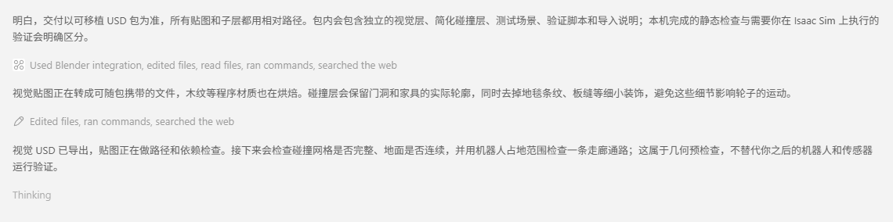
Agent 烘焙了木纹等程序材质，导出 Visual USD，并把碰撞层、测试场景、依赖、manifest、静态与 Isaac 验证脚本一并交付。碰撞层保留门洞和家具实体轮廓，同时排除板缝、贴画、地毯纹理等不该影响轮子的微细节。
OpenUSD 0.26.3 · 3 layers · 14 external assets · 所有相对引用均已解析
test_scene.usda → corridor.usda
├ visual.usdc
├ collision.usda
├ manifest.json
├ validate_asset.py
└ validate_in_isaac.py边界必须写清楚：这次通过的是文件引用、纹理、单位、网格、碰撞绑定和二维通路的静态预检。捕获走廊用 emission 保留原始光影，并非完全可重新打光的 PBR。截至 9 月 23 日，Isaac Sim 尚未安装，因此落地、摩擦、墙面 raycast、真实机器人通行、RGB/RTX LiDAR 与深度传感器都还没有运行验证。
08 / DELIVERY GATE
这里展示的是三个不同层级的证据：Blender 母版负责组织 Visual 与 Collision；round-trip 负责证明导出的视觉 USD 可以独立回读；portable package 则证明整个交付在更换目录后仍能解析。它们不能互相替代。
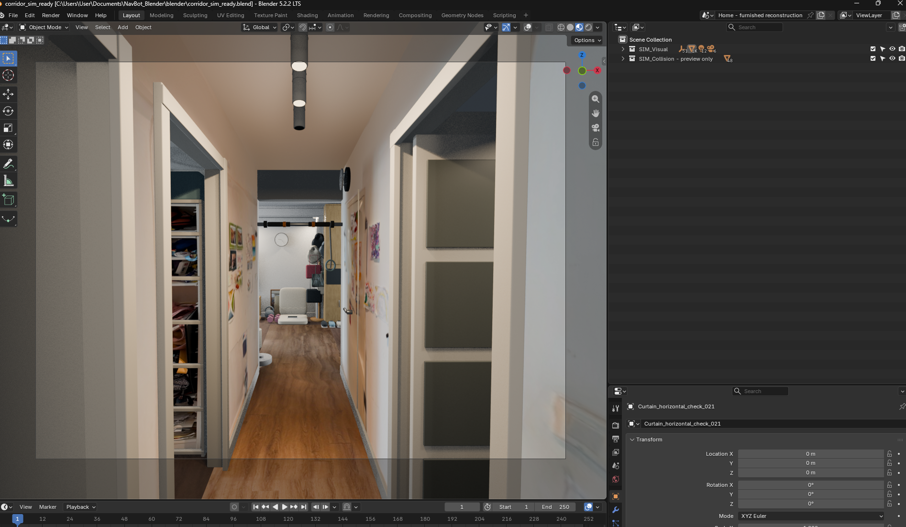
corridor_sim_ready.blend 保留完整走廊外观，同时在 Outliner 中明确拆分 SIM_Visual 与 SIM_Collision - preview only。前者服务渲染和视觉传感器，后者用于检查门洞、墙地面和家具的简化碰撞代理。
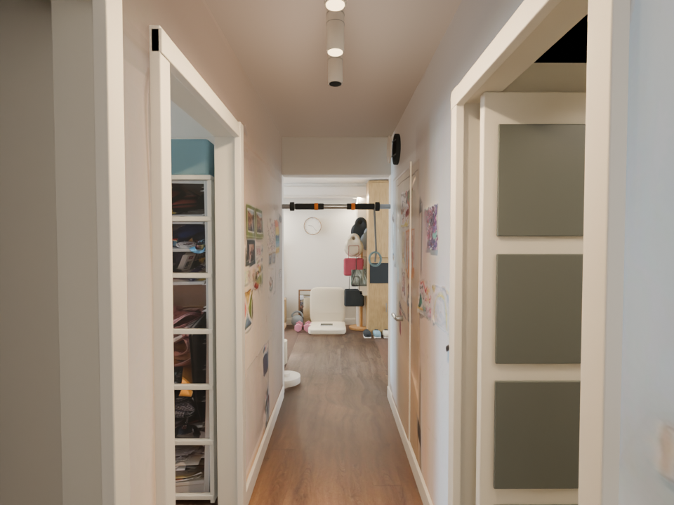
将导出的 visual.usdc 重新导入一个独立 Blender 会话并再次渲染。这项检查确认视觉几何、贴图路径和 1,020 个材质绑定能够脱离原始 .blend 回读；它不检查碰撞或机器人动力学。
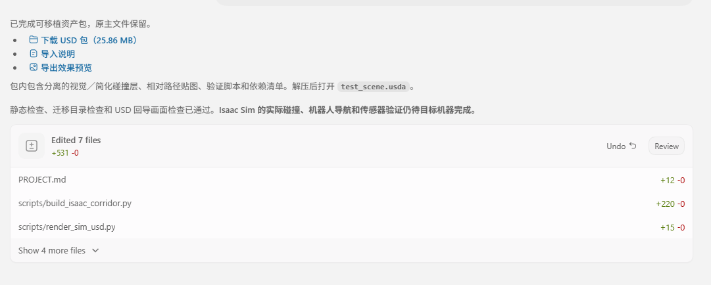
交付包包含视觉/碰撞 USD、相对路径贴图、测试场景、导入说明、依赖与校验清单。复制到另一目录后静态验证再次通过，原始 Blender 母版保持不变。
Visual 与 Collision 在 Sim-ready Blender 文件中独立组织，方便检查和分别导出。
Visual USD 可以重新导入并渲染，验证外观数据不是只存在于源文件里。
迁移目录复检通过，证明包内没有依赖当前电脑的绝对路径。
9 月 24 日已完成局部刚体落地测试；机器人通行、RGB、深度与 RTX LiDAR 仍待验证。
09 / PHYSICS SANITY TEST · 2026.09.24
在 Windows 原生运行 Isaac Sim 6.1.0，导入 Blender 导出的走廊 USD，再用一个小方块检查重力与地面接触。这是环境迁移的第一次运行验证。
约 47 秒实机录屏：检查方块运动、地面接触，并尝试调整初速度。网页视频保留完整时间线。
走廊使用 meters、Z-up，Visual 与 Collision 分层。测试 Cube 添加 Rigid Body 和 Convex Hull Collider，启用重力、关闭 Kinematic；地板使用静态 Triangle Mesh Collider。
在走廊内选定位置，方块能够落下并停在地板上。随后尝试初速度与材质设置，观察运动和接触。这个结果证明了该位置的基本物理交互可用。
最初投放位置出现穿透，换到走廊内另一位置后成功。尚未确认原因，需要检查原位置的碰撞覆盖、几何对齐和初始高度；不能据此认定整片地面都已通过。
已完成 Isaac Sim 安装、room USD 导入，以及局部 collider + rigid-body sanity test。接下来先补查穿透位置，再导入 NavBot 的 URDF + meshes，检查 link、joint、mass / inertia 和 collision。机器人导航、RTX LiDAR / Camera、ROS2、Isaac Lab 与 RL 都尚未在这个场景验证；Rule-only + PPO correction policy 的复用和 Gazebo 对比属于后续阶段。
10 / PHYSICS MATERIAL · 2026.09.24
落地测试之后，继续尝试接触材质。创建并绑定 Cube_PhysicsMaterial，调高 Restitution，绿色方块现在出现明显反弹。Omniverse / Isaac Sim 的实验，也从碰撞是否成立，进入接触行为的调整。
约 10 秒实机录屏，保留完整时间线。右侧属性面板同时记录此次材质参数。
通过 Create → Physics → Physics Material，在创建窗口勾选 Rigid Body Material，命名为 Cube_PhysicsMaterial。
选中 Cube，在 Physics materials on selected models 中绑定新材质；外观材质栏继续保留 OmniPBR。绿色由 shader 决定，摩擦与反弹由 Physics Material 决定。
Static Friction：0.4
Dynamic Friction：0.3
Restitution：0.8
Friction Combine Mode：average
Restitution Combine Mode：max
这次验证了物理材质绑定和恢复系数设置能够改变接触后的运动。它是一次定性演示，尚未测量反弹高度或校准真实材料；前一次实验中原投放位置的穿透问题仍待排查。
9 月 24 日续篇：NavBot 已通过 URDF Importer 导入，完成平地运动与局部走廊碰撞验证。原投放位置的穿透问题仍待排查。阅读机器人走廊实验 →
返回开发日志